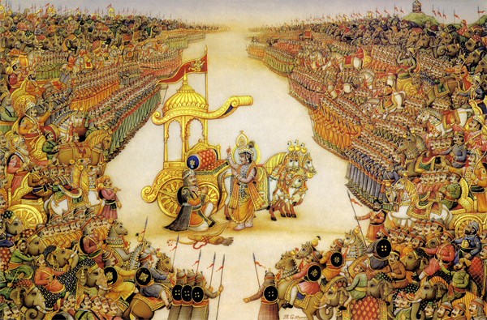

|  |
Welcome to the e-version of Bhagavad Geeta. The e-version captures the salient features of the book viz.,
style of understanding a text, and present them in the e-form. The advantage of the e-version is that the reader has full control over the interface and can choose to display only the relevant part. The department of Sanskrit Studies, in addition has provided the pictorial representation of the कारक (kāraka) analysis as well as समास (samāsa) analysis. The समास-विग्रह (samāsa-vigrah) is available as a tool-tip along with the picture showing the composition. By placing a cursor on the समास (samāsa), one gets this information. The कारक (kāraka) analysis is available as a link to the sentence numbers. |
| |
|
Department of Sanskrit Studies |
|
|
|
|
Browser compatibility: Firefox 3+ (Recommended), Chrome, Opera, Internet Explorer 8